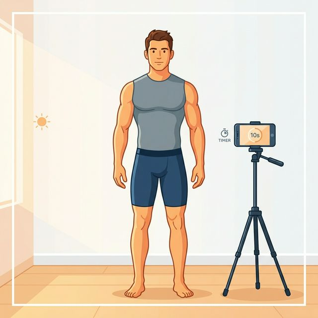

Ready to Put Your Setup to Work?
GainFrame's AI analyzes your progress photos to track body fat, muscle development, and physique changes over time — for free.
Build your perfect photo setup, pick your poses, and score your current routine — so every progress pic is consistent, comparable, and AI-ready.
Drag the slider to compare a bad setup vs a good one. Same physique — wildly different photos.

Answer 5 quick questions and get a personalized photo setup plan.
Tap a pose to see what it reveals and how to nail it every time.
Answer 8 quick questions about your current routine and get a score.
GainFrame's AI analyzes your progress photos to track body fat, muscle development, and physique changes over time — for free.
Every 1–2 weeks is ideal. Changes happen slowly, so less than weekly avoids frustration, while more than monthly ensures you don't miss trends. Always shoot at the same time of day for consistency.
A timer is strongly recommended. Mirror selfies introduce angle distortion, hide one arm behind the phone, and often include flash glare. A phone on a tripod or shelf with a 3–10 second timer produces far more consistent, comparable results.
Start with 3–4 key poses: front relaxed, side relaxed, back relaxed, and optionally a front double bicep. These cover all major muscle groups and provide consistent comparison points over time.
Lighting is one of the most important factors. Harsh overhead lighting creates misleading shadows that fake definition, while dim lighting hides real progress. Consistent, even lighting — ideally natural window light — produces the most honest, comparable results.
Yes. Apps like GainFrame use AI to estimate body fat percentage, FFMI, muscle group scores, and overall physique development from a single photo. Consistent photo setup dramatically improves the accuracy of AI analysis.